01 Summary
South Africa has a gender-based violence (GBV) crisis, and it also has a trust crisis. Many women who report abuse are not believed, because what happened behind closed doors comes down to her word against his. At the same time, in a climate of anger, an accusation is sometimes believed without proof, which is unfair to an innocent person. Both problems have the same cause: there is no trustworthy evidence.
HerShield fixes the evidence. It works like the black box on an aeroplane or a dashcam in a car: it does not take sides, it records what happens. A woman sets her own secret everyday phrase, for example "Have you seen my red scarf?". When she says it, her phone starts recording in secret. She does not need to touch, unlock or even reach the phone. Every few seconds the audio, time and GPS location get a cryptographic fingerprint, and each fingerprint is linked to the one before it. Nobody can delete, edit or trim a recording, not the abuser and not the woman herself. A police officer, lawyer or court can later check that the recording is authentic.
For her: She can capture evidence without touching her phone, even while it is in a bag or across the room. The evidence survives if he grabs or searches the phone, because it cannot be deleted and the app hides behind a calculator.
For justice: The evidence cannot be fabricated or edited. HerShield never accuses anyone. It only preserves facts, and the same facts can clear someone who is falsely accused.
Why this is new
Most GBV apps are panic buttons. They alert someone, and when the moment passes, nothing is left that a court can use. HerShield focuses on what happens afterwards: evidence that people believe because it cannot be tampered with. It also works without data or signal, which matters for women in rural areas and women who cannot afford data.
03 How HerShield works
1. Set upChoose a secret phrase, PIN, theme and disguise
2. ArmedThe phone listens on-device for her phrase only
3. TriggeredPhrase, shake or tap. No unlocking needed
4. Covert captureAudio, time and GPS. Screen looks locked
5. SealedEach 4-second piece is fingerprinted and chained
6. VerifiedPolice or court checks the file is authentic
Step 1: Set up, once, when the app is installed
She chooses her own secret phrase. It works like "Hey Siri", but it is a normal sentence that nobody would recognise as a trigger. She says it three times so the phone learns her voice. She also sets a PIN, an optional duress PIN, her theme colours, the app's disguise (a working calculator), and optional trusted people.
Step 2: Armed, listening only for the phrase
The phone runs a small wake-word detector on the device, the same kind of technology behind "Hey Siri" and "OK Google". While waiting, it does not record, store or send anything. It only checks each moment of sound for her phrase and then throws the sound away. That keeps her and the people around her private.
Step 3: Triggered, without touching the phone
She says her phrase during an argument, an assault, a kidnapping, or whenever she feels unsafe. The man has no idea a recording has started, because she said something ordinary. Backup triggers cover situations where she cannot speak: shaking the phone three times, triple-tapping the logo, and in the full version a volume-button pattern or a Bluetooth bracelet or smartwatch button.
Step 4: Covert capture
The screen shows a black "locked" clock face, or the calculator. Nothing on it says "recording". The microphone records audio, and the app stores the GPS location and time. All of this uses hardware already in the phone, so no data, airtime or signal is needed. To stop recording, she has to enter her PIN, so he cannot stop it.
Step 5: Sealed, so nobody can change it
The recording is cut into 4-second pieces. As soon as each piece is saved, HerShield calculates a SHA-256 fingerprint of it. That is a 64-character code that changes completely if even one bit of the audio changes. Each piece's seal includes the previous piece's seal, which forms a chain, the same idea used in blockchains:
Piece #0
audio + time + GPS
seal 40ae…b9e6
⛓
Piece #1
+ seal of #0
seal 4371…bec5
⛓
Piece #2
+ seal of #1
seal f970…d513
⛓
Piece #3
+ seal of #2
seal 22a5…4629
If someone removes even one second from piece #1, its fingerprint no longer matches, and every seal after it breaks too. The tampering is immediately visible. Because the pieces are sealed while she is still recording, at most the last 4 seconds are ever unsealed.
Step 6: Vault and verification
Sealed recordings go into the Evidence Vault. The vault has no delete button and no edit tool. When she is ready, she can export the original audio plus a manifest, a file listing every fingerprint, and release it to SAPS, a court or her lawyer. Anyone can use the Verify tool to check that a file is byte-for-byte identical to the sealed original.
05 Protecting the truth on both sides
We designed HerShield around a hard question: "What if a woman lies?" Our answer is that HerShield does not take her word for anything. It does not store her version of events. It stores raw recordings that cannot be altered.
What HerShield proves- This recording is genuine and unedited
- When it was captured, and where (GPS)
- Which device captured it
- That nothing was cut out or added
What HerShield does NOT do- It does not decide who is guilty. Courts do that
- It does not store written accusations or "reports"
- It does not publish, name or shame anyone
- It cannot turn an edited or faked file into "evidence"
Fairness built in: the recording is complete, so if it shows something different from what is claimed, it supports the accused. A woman cannot pick out a convenient 10 seconds, because the whole session is sealed. A file from another app, or an edited clip, fails verification. A truthful woman is believed, and an innocent man is protected from fake evidence.
Known limit (we say this openly): no technology can stop someone staging a fake scene in real life. But a staged recording is still a complete, timestamped, location-tagged, unedited recording, and a court can examine it like any other evidence. HerShield raises the bar for false claims. It does not replace investigation.
06 Offline use and cost
Our question was: "Will this cost the user money?" The core of HerShield costs her nothing to use, because it only uses hardware she already has:
| Part | Uses | Needs data or signal? | Cost to user |
|---|
| Listening for the phrase | On-device wake-word engine | No | Free |
| Recording audio | Phone microphone (with permission) | No | Free |
| Date and time | Phone clock (full version: GPS time as well) | No | Free |
| Location | GPS chip (works without data) | No | Free |
| Sealing (fingerprints) | Phone processor (SHA-256) | No | Free |
| Storage | Phone storage. About 1 MB per minute of compressed audio | No | Free |
| Cloud backup full version | Encrypted upload when she gets Wi-Fi or data | Yes, optional | Small data use, ideally zero-rated |
| Alert to trusted people full version | SMS with location | Signal | Covered by the service, not by her |
How we make offline evidence even stronger
A phone's own clock can be changed by the user. So in the full version, as soon as the phone finds any connection, it sends only the fingerprints (a few bytes, never the audio) to a trusted timestamp server. This proves the recording existed at that time and has not been changed since. If there is no data at all, the fingerprint can be sent as one short SMS to the HerShield service. The phone also stores GPS satellite time, which the user cannot change.
Running costs for us, the service
- Wake-word engine: open-source options (e.g. openWakeWord, Vosk) cost nothing, and commercial engines (e.g. Picovoice Porcupine) charge licence fees. We would start open source.
- Cloud storage and timestamping: cheap per user. Most users would only back up fingerprints, not audio.
- Funding model: free to every woman, always. We would look for funding from GBV NGOs, government (e.g. the Department of Women, Youth and Persons with Disabilities), CSI programmes, and partnerships with mobile networks for zero-rated data.
08 Demo walkthrough: every screen and button
These screenshots are from the working demo (PIN 1234, duress PIN 0000, phrase "Have you seen my red scarf"). Buttons marked DEMO exist only so the judges can see what happens behind the scenes. They are not in the real app.
A. First-time setup (7 steps)
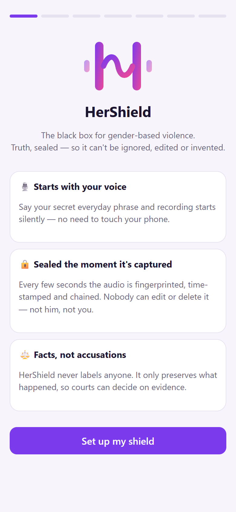
1Welcome
Introduces the three promises: it starts with your voice, it is sealed the moment it is captured, and it records facts, not accusations.
| Set up my shield | Starts the setup wizard. |
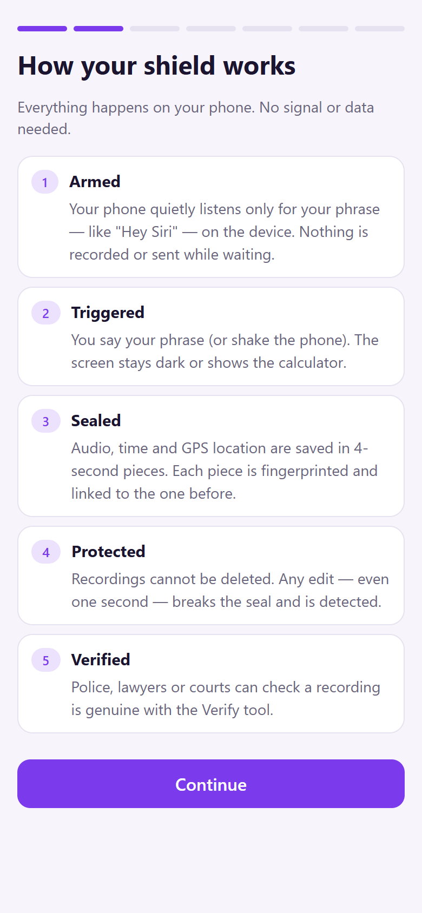
2How your shield works
Explains the five stages (Armed, Triggered, Sealed, Protected, Verified) in plain language before she gives any permissions, so she knows exactly what she is agreeing to.
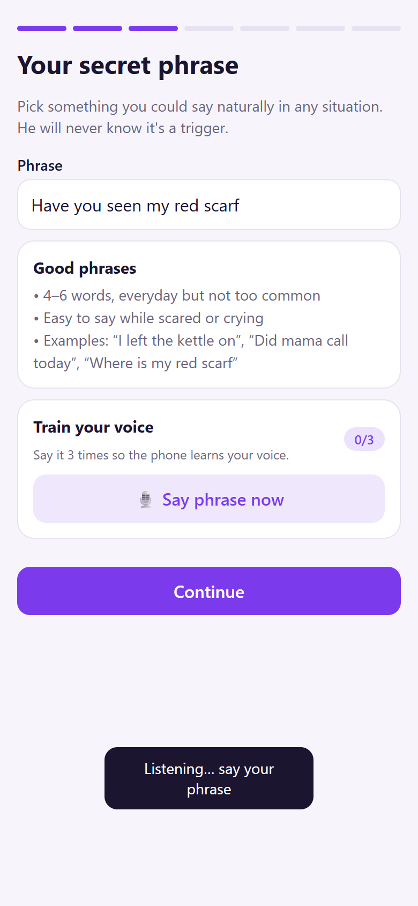
3Your secret phrase
She types her own trigger sentence. Tips help her choose a good one.
| Phrase box | Her private trigger (at least 3 words). |
| 🎙️ Say phrase now | Listens and checks it heard the phrase correctly. Counts to 3/3 to "train" her voice. |
| Continue | Saves the phrase on the phone only. |
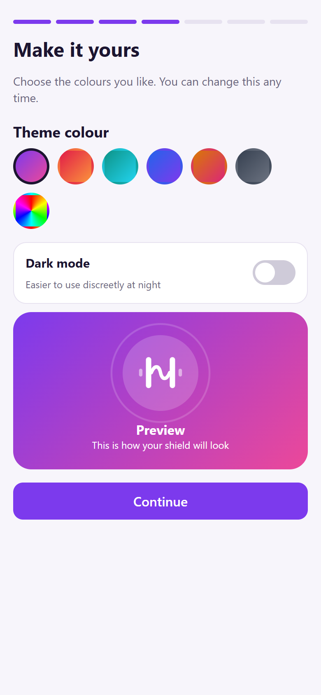
4Make it yours
Personal theme. Changes apply immediately to the live preview.
| Colour circles | 6 preset themes (Violet, Rose, Teal, Ocean, Amber, Graphite). |
| Rainbow circle | Any custom colour. |
| Dark mode switch | Dark theme for discreet use at night. |
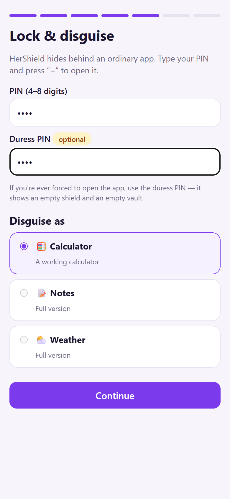
5Lock and disguise
| PIN | 4–8 digits. Opens the app (typed into the calculator) and is needed to stop a recording. |
| Duress PIN | Optional. Opens an empty decoy if she is forced to unlock the app. |
| Disguise as | Calculator (works now). Notes and Weather full version. |
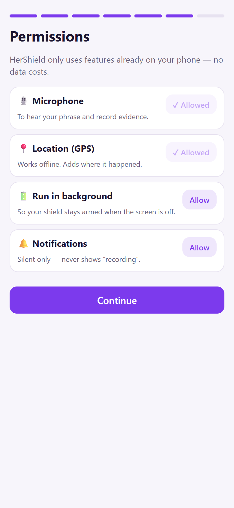
6Permissions
Each permission is explained. All of them work without data.
| Allow (Microphone) | Asks the phone for microphone access. |
| Allow (Location) | Asks for GPS access. |
| Allow (Background) | Keeps the shield armed with the screen off (full version: foreground service). |
| Allow (Notifications) | Silent notifications only. |
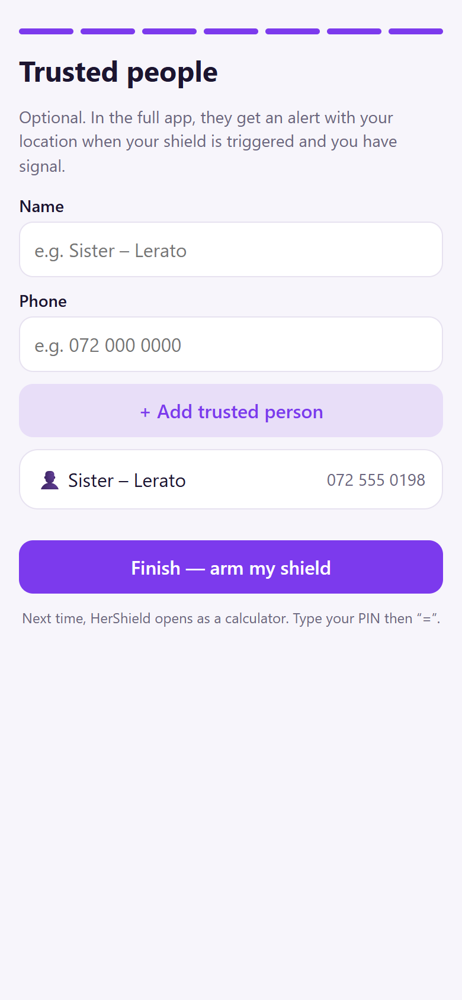
7Trusted people
| + Add trusted person | Saves a name and number. Full version: they get an SMS with her location when the shield triggers. |
| Finish: arm my shield | Completes setup and arms the shield. |
B. Everyday use
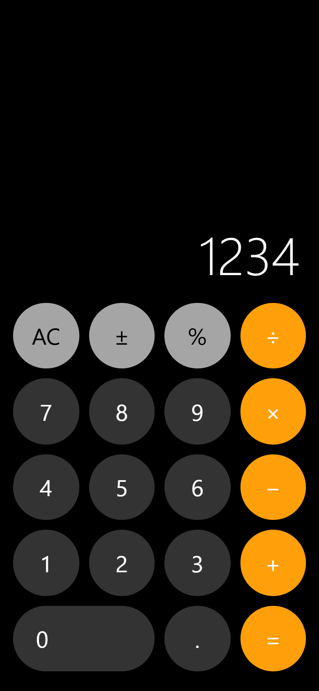
8The disguise: a real calculator
This is what anyone sees when they open the app. It does real maths.
| Type PIN, then "=" | Opens HerShield (here 1234 =). |
| Type duress PIN, then "=" | Opens the empty decoy. |
| Any other sum | Works as a normal calculator. |
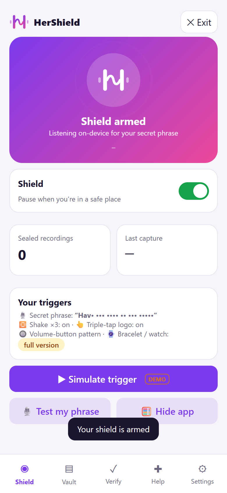
9Shield (home)
| Pulsing logo | Shows the shield is armed and listening. Triple-tap it to trigger recording. |
| Shield switch | Pause it in a safe place (e.g. church, work). |
| Your triggers | Shows active triggers. The phrase is partly hidden. |
| ▶ Simulate trigger DEMO | Starts recording exactly as if the phrase had been heard. |
| 🎙️ Test my phrase | Checks the phone recognises her phrase, without recording. |
| 🧮 Hide app | Goes straight back to the calculator. |
| ✕ Exit (top right) | Quick exit, available on every screen. Jumps to the calculator immediately. |
| Bottom tabs | Shield · Vault · Verify · Help · Settings. |
C. When the shield is triggered
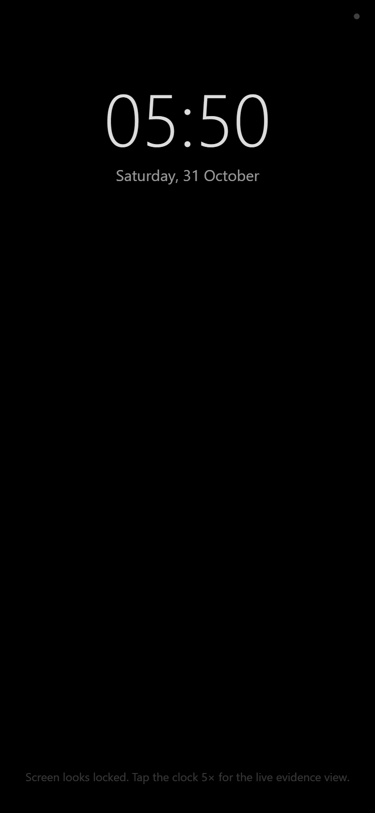
10Covert recording
The screen looks like a locked phone showing only the clock. Nothing says "recording". Audio, time and GPS are being captured and sealed every 4 seconds.
| Tap the clock 5 times | Shows the hidden live evidence view (for her, or for the demo). |
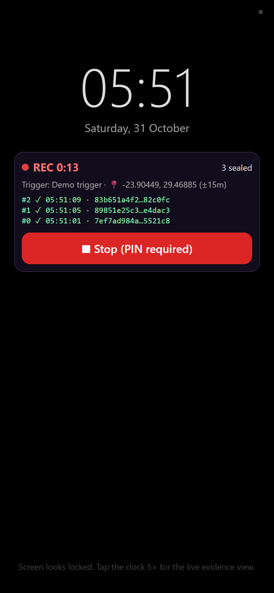
11Live evidence view
Shows recording time, trigger, GPS position, and each piece's seal as it is created (#0, #1, #2…). Each one is sealed within seconds.
| ■ Stop (PIN required) | Opens the PIN prompt. Without the PIN, recording cannot be stopped. |
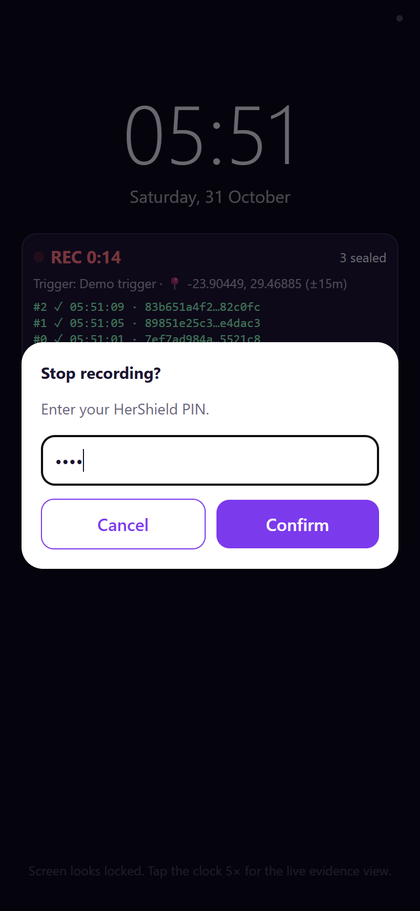
12Stop needs the PIN
| Confirm | With the correct PIN: stops, finalises the file fingerprint and saves it to the Vault. |
| Cancel | Keeps recording. |
| Wrong PIN | "Incorrect PIN". Recording continues. |
D. Evidence Vault
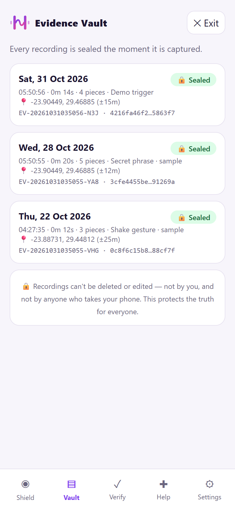
13Vault
All sealed recordings with date, time, length, number of pieces, trigger type, GPS and fingerprint. There is no delete option anywhere.
| Tap a recording | Opens its evidence record. |
| Load sample evidence DEMO | Adds sample recordings for the demo (only shown when the vault is empty). |
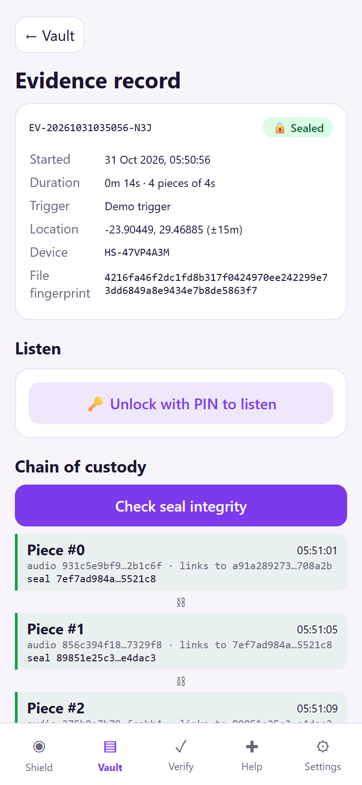
14Evidence record
The full record: ID, start time, duration, trigger, location, device ID and the file's SHA-256 fingerprint.
| ← Vault | Back to the list. |
| 🔑 Unlock with PIN to listen | Plays the recording after the PIN, if her listening setting allows it. |
| Check seal integrity | Recalculates every fingerprint and checks the whole chain. |
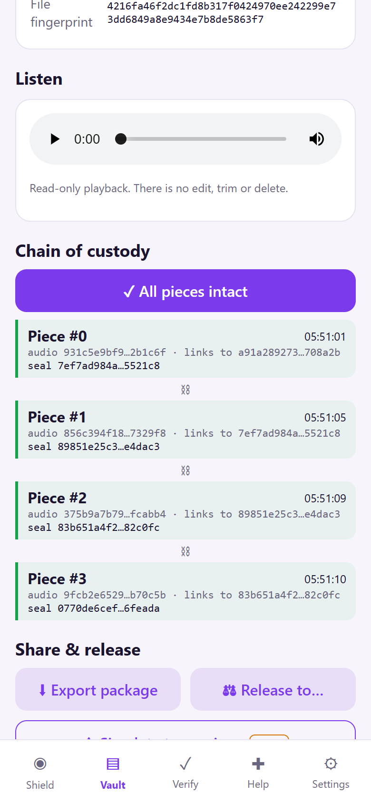
15Playback and chain of custody
Read-only audio player (no trim, no edit). After Check seal integrity, every piece shows green: "✓ All pieces intact". Each piece shows its audio fingerprint, the seal it links to, and its own seal.
| ⬇ Export package | Downloads the original audio plus a manifest (.json) of all fingerprints, for SAPS, a lawyer or a court. |
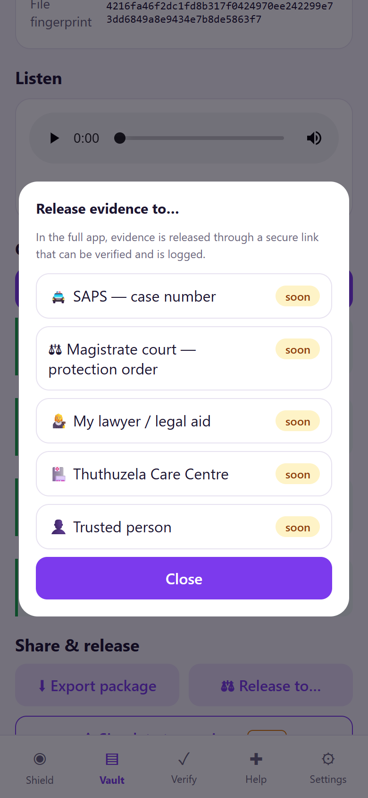
16Release to…
Full-version release routes: SAPS case number, magistrate's court (protection order), lawyer / Legal Aid, Thuthuzela Care Centre, trusted person. Each release would use a secure, logged, verifiable link.
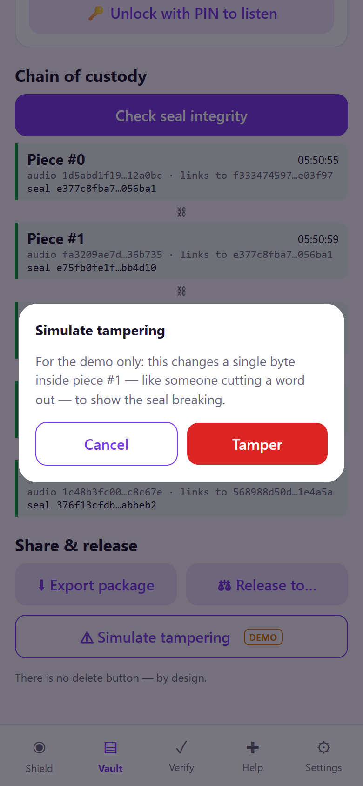
17Simulate tampering DEMO
Shows the judges what happens if someone edits the evidence. It changes one single byte of one piece, like cutting out a word.
| Tamper | Makes the change. |
| Cancel | Leaves the evidence untouched. |
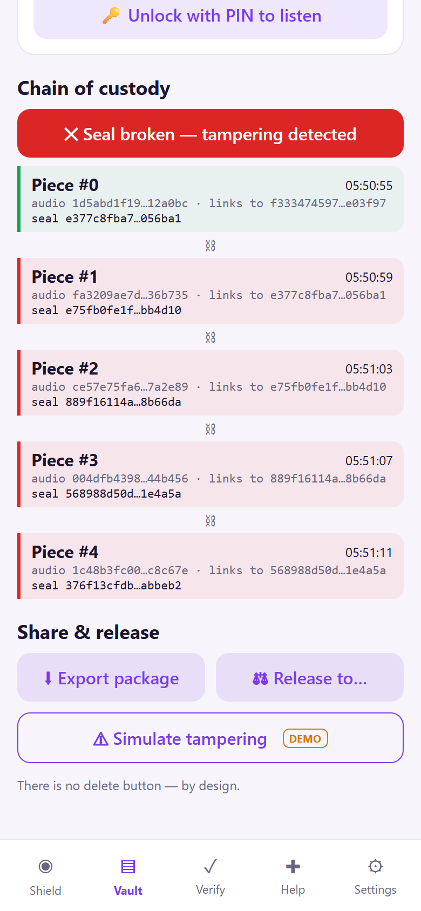
18Tampering detected
After Check seal integrity: "✕ Seal broken: tampering detected". The edited piece and every piece after it turn red, because each seal depends on the one before. One changed byte breaks the chain.
E. Verify (for police, courts and lawyers)
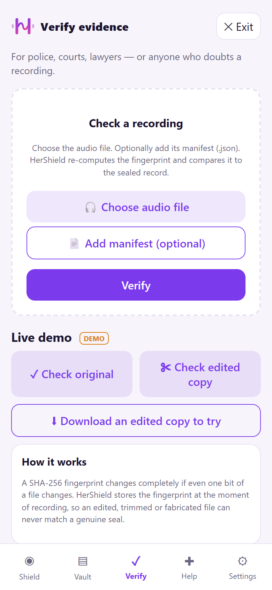
19Verify evidence
| 🎧 Choose audio file | Selects any audio file to check. |
| 📄 Add manifest | Optional. Compares against the exported manifest. |
| Verify | Calculates the file's SHA-256 and compares it to the sealed records. |
| ✓ Check original DEMO | Verifies the latest real recording. |
| ✂ Check edited copy DEMO | Removes 1 second from the recording and verifies the edited copy. |
| ⬇ Download an edited copy | Saves an edited file so judges can test it themselves. |
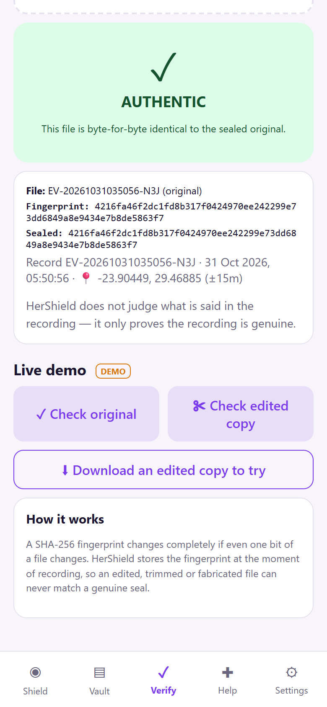
20Result: AUTHENTIC
The file is byte-for-byte identical to the sealed original. The result shows both fingerprints, the record ID, time and GPS. It also states: "HerShield does not judge what is said in the recording. It only proves the recording is genuine."
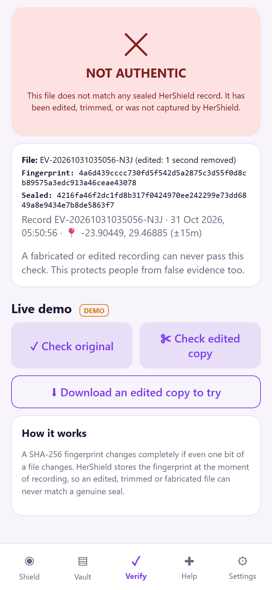
21Result: NOT AUTHENTIC
The edited copy (1 second removed) has a completely different fingerprint. "A fabricated or edited recording can never pass this check. This protects people from false evidence too."
F. Help, settings and protection features
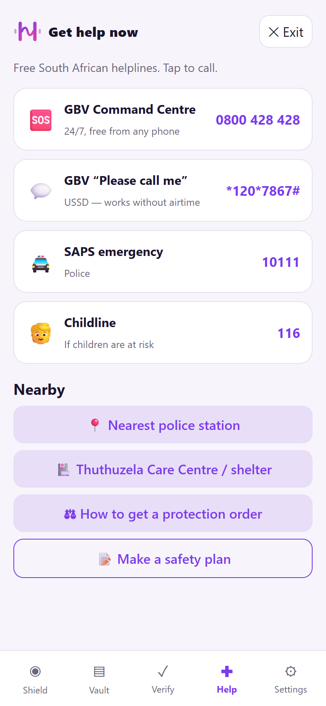
22Get help now
| GBV Command Centre | Calls 0800 428 428 (24/7, free). |
| GBV "Please call me" | Dials *120*7867# (works without airtime). |
| SAPS emergency | Calls 10111. |
| Childline | Calls 116. |
| Nearest police / Thuthuzela / protection-order guide / safety plan | full version. Opens an explanation popup (next screen). |
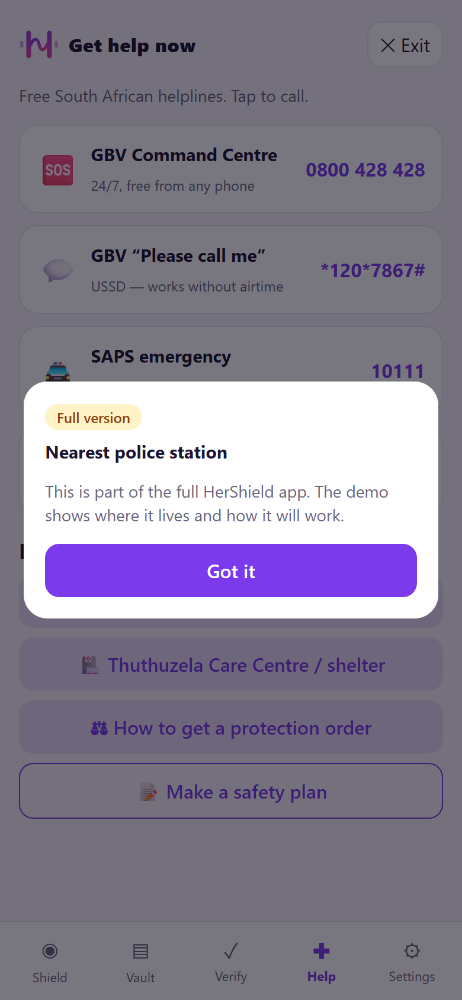
23"Full version" popup
Every planned feature has its place in the app. Tapping it explains that the feature belongs to the full version. This shows the full skeleton without pretending it is finished.
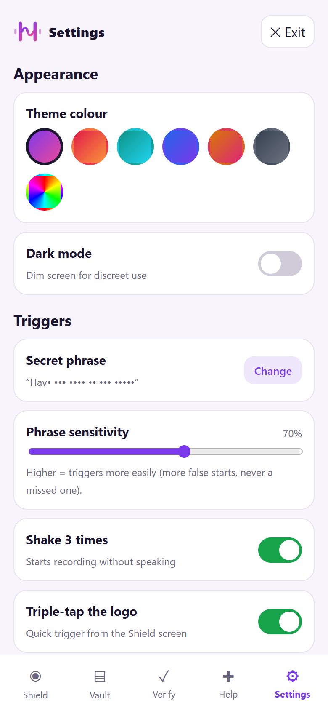
24Settings: appearance and triggers
| Theme colour / custom | Change theme any time. |
| Dark mode | On or off. |
| Secret phrase: Change | Requires the PIN, then reopens phrase training. |
| Phrase sensitivity | Higher means it triggers more easily. We prefer a false start to a missed attack. |
| Shake 3 times / Triple-tap | Turn the backup triggers on or off. |
| Volume pattern / Bracelet | full version |
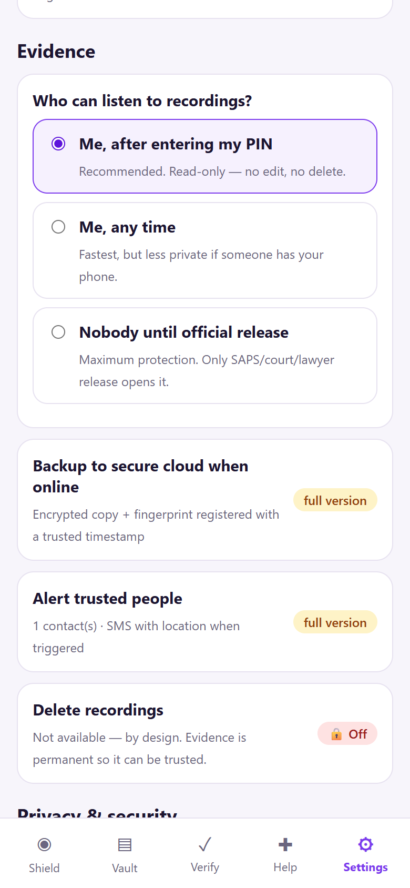
25Settings: evidence
| Who can listen? | (1) Me after PIN (recommended) · (2) Me any time · (3) Nobody until official release. Changing it requires the PIN. |
| Cloud backup | full version Encrypted copy plus trusted timestamp. |
| Alert trusted people | full version SMS with location. |
| Delete recordings | 🔒 Off, permanently, by design. |
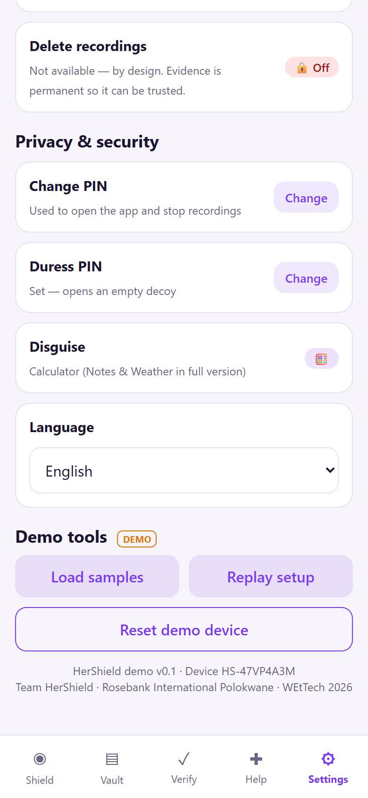
26Settings: privacy, language, demo tools
| Change PIN / Duress PIN | Requires the current PIN. |
| Disguise | Calculator (Notes and Weather to come). |
| Language | English now. Sepedi, isiZulu, Afrikaans, Xitsonga, Tshivenda, isiXhosa and Setswana planned. |
| Load samples / Replay setup / Reset DEMO | Demo-only tools. The real app cannot be reset or wiped. |
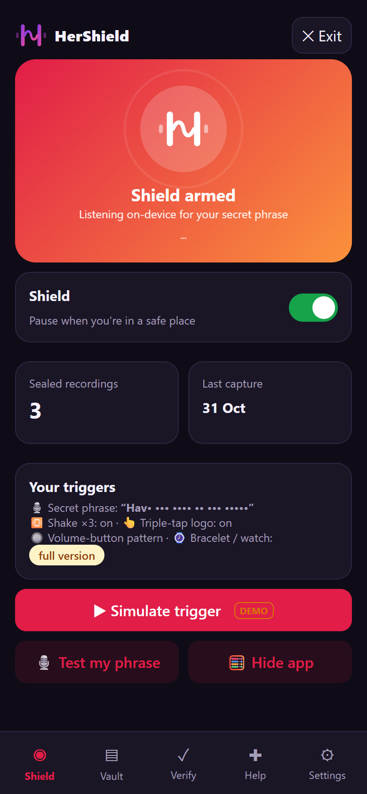
27Her theme: Rose + dark mode
The whole app recolours to her choice: gradients, buttons and tabs.
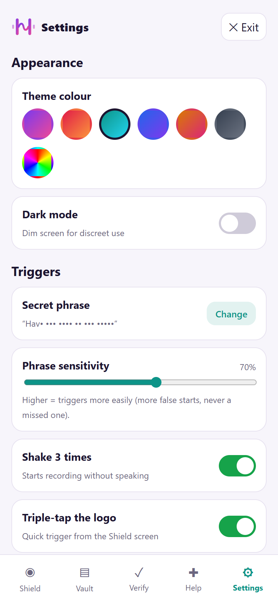
28Her theme: Teal (light)
Another example. Any colour can be picked with the custom colour wheel.
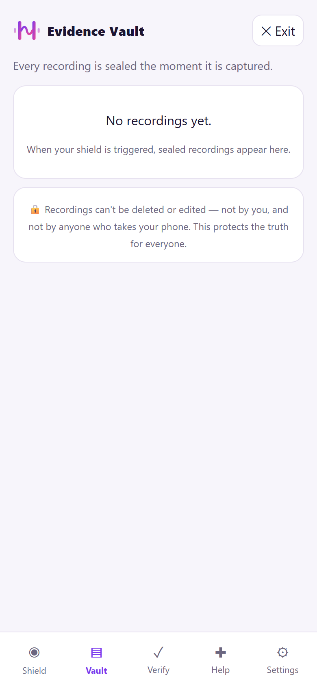
29Duress PIN: the decoy
Opened with the duress PIN 0000. The vault looks empty and the shield shows nothing. If an abuser forces her to "show him the app", the real evidence stays hidden and untouched.
09 Technology: the demo and the full product
Today's demo (built for the hackathon)
| Technology | Used for | Why we chose it |
|---|
| HTML5, CSS3, JavaScript (no framework) | The whole app | Runs on Android and iPhone in any modern browser with nothing to install. No build tools, so it is fast to build and easy to show. The demo can be added to the home screen as an app (PWA). |
| Service Worker (PWA) | Offline mode | After the first visit, the app loads and works with no internet, proving the offline-first idea. |
| MediaRecorder API | Microphone recording in 4-second pieces | Built into browsers, on-device, no cost. |
| Web Speech API | Recognising the secret phrase | Lets us demonstrate voice triggering. Limitation: in browsers it may need internet, which is why the full app uses an offline on-device wake-word engine. |
| Web Crypto API (SHA-256) | Fingerprints and the seal chain | The industry-standard hash, built into every browser and phone. The same algorithm is used for digital signatures and blockchains. |
| IndexedDB | Evidence Vault storage | Stores audio on the device. We deliberately wrote no delete function. |
| Geolocation API, Device Motion API | GPS location, shake trigger | Phone hardware, works offline. |
The full product
| Layer | Technology | Why |
|---|
| Mobile app (Android + iOS) | Flutter (Dart) | One codebase builds real native apps for both platforms. It performs well on low-cost Android phones, which most South African women use. |
| Android native module | Kotlin | The always-on foreground service, background microphone, volume-button trigger and Android Keystore all need native Android code. |
| iOS native module | Swift | Siri Shortcuts / App Intents (custom phrase), Back Tap and Action Button, AVAudioSession background recording, and Secure Enclave all need native iOS code. |
| Offline wake word | openWakeWord / Vosk (open source) or Picovoice Porcupine | Recognises her custom phrase fully on the device, with no internet and low battery use. |
| On-device security | AES-256-GCM encryption, SQLCipher (encrypted SQLite), keys in Keystore / Secure Enclave | If the phone is stolen or searched, the recordings cannot be read without her PIN. |
| Backend API | Node.js + TypeScript (NestJS) | The same language family as our demo (JavaScript), fast to develop, and widely taught. |
| Database and storage | PostgreSQL. Encrypted object storage in a South African cloud region | Keeps personal data in the country, in line with POPIA. |
| Proof of time | RFC 3161 trusted timestamps plus an append-only transparency log (Merkle tree) | Proves the fingerprint existed at a given time, independent of the phone's clock. |
| Verification portal | Web app (React / Next.js) for SAPS, NPA, courts and lawyers | Officials can verify evidence and receive releases securely, with an access log. |
| SMS fallback | Bulk-SMS gateway | Sends fingerprints and trusted-contact alerts when there is no data. |
Full-product architecture
📱 On the phone (offline)Wake-word engine → covert recorder → 4-second sealing → encrypted vault. Disguise, duress PIN, triggers.
☁️ When connectedFingerprints → trusted timestamp server and transparency log. Optional encrypted audio backup. Alerts to trusted people.
⚖️ Justice sideVerification portal: SAPS, courts and Legal Aid receive releases, check fingerprints and see the chain of custody.
11 What works today and what comes next
| Feature | Status |
|---|
| Setup wizard: phrase, theme, PIN, duress PIN, disguise, permissions, trusted people | works in demo |
| Working calculator disguise. PIN + "=" unlocks. Duress PIN opens an empty decoy | works in demo |
| Voice phrase trigger (browser speech recognition) | works in demo (best in Chrome; may need internet) |
| Shake trigger, triple-tap trigger, simulated trigger | works in demo |
| Covert "locked screen" recording view. Stopping needs the PIN | works in demo |
| Real microphone recording, GPS, timestamps | works in demo |
| 4-second SHA-256 hash-chain sealing | works in demo |
| Vault with no delete. PIN-protected read-only playback. Three listening policies | works in demo |
| Integrity check. Tamper simulation and detection | works in demo |
| Export of original audio + manifest. Verify tool (authentic / not authentic) | works in demo |
| Themes (6 presets + custom) and dark mode. Quick exit on every screen | works in demo |
| Helplines with tap-to-call | works in demo |
| Offline on-device wake word (always-on, screen off) | full version |
| Volume-button pattern, Bluetooth bracelet, smartwatch, Back Tap / Action Button | full version |
| Encryption at rest. Trusted timestamps. Cloud backup. SMS fallback | full version |
| Release to SAPS, court or lawyer. Verification portal | full version |
| Trusted-person alerts. Nearest police station / Thuthuzela map. Safety plan | full version |
| 8 South African languages. Notes / Weather disguises. Video option | full version |
Honest note on the demo: the evidence is stored in the browser on one device, and the seal chain is checked on that device. In the full product, fingerprints are also registered with an independent timestamp server, so even someone with complete control of the phone could not quietly rebuild a fake chain.
12 Roadmap
| Phase | Goal |
|---|
1. Validate
(next 1–2 months) | Talk to GBV survivors' organisations, SAPS victim-support units, a law clinic and Thuthuzela Care Centres. Test whether phrases trigger reliably in real conditions (crying, noise, phone in a bag). |
| 2. Build the MVP app | Flutter app for Android first (most SA users), with the offline wake word, encrypted vault and trusted timestamps. |
| 3. Pilot | Pilot with an NGO in Limpopo, then measure triggers, reliability and whether evidence was accepted. |
| 4. Justice integration | Verification portal for SAPS and courts. Links with Domestic Violence Act online applications. |
| 5. Scale | iOS, Bluetooth bracelet, 8 languages, zero-rated data partnerships. |
13 What we learned
- A panic button is the wrong design when the victim cannot reach her phone. That realisation moved us to a voice trigger she can use hands-free.
- Fairness makes the solution stronger, not weaker. Designing against false accusations led to the no-delete, no-edit seal, and that is exactly what makes her evidence believable.
- Offline matters in South Africa. Data costs and the abuser's control over connectivity are real barriers.
- Platform honesty: Android and iOS restrict background listening differently, so the product needs several types of trigger.
- Building alone taught us to prioritise one clear user journey, then show the rest of the product as a clearly labelled skeleton.